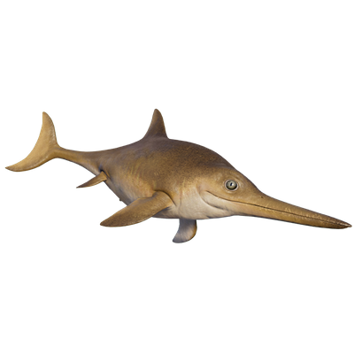

Useful Website
Ichthyosaurus is a small marine reptile, measuring around 2m in length – far smaller than other genera of ichthyosaurs, which can grow up to 25m. Its paddle-like limbs and streamlined body allow it to move at great speed through water, catching its prey in its long, thin snout. Ichthyosaurus is a piscivore, with a diet consisting mostly of fish and squid.
